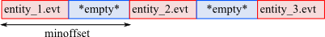
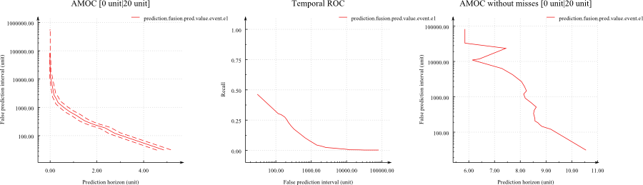

Titarl | Tutorial
Introduction
Titarl is a Data Mining algorithm designed to extract and apply temporal rules from/on symbolic time series and time sequences (SSTS). Titarl rules can be directly interpreted (through the help of the Rule Viewer), used for predictions/detection, or used as input of other analysis. The Titarl binary also include tools to automate the cross-validation evaluation of learned rules as well as the implementation of various other Machine Learning algorithms (for comparison).
Before reading this tutorial on how to use Titarl, it is strongly recommended for you to read the interactive Titarl description. This document will give you the basic understanding of the goal of Titarl.
Titarl can used in two different ways. The first way is to use Titarl with the command line (e.g. --learn, --apply, --display, --eval). This solution is simple but becomes fastidious, when changing and comparing Titarl parameters, when applying cross-validation, or to stop and resume runs. The second solution is to use the Titarl Experiment Manager that will calls Titarl command line itself. The second solution is preferable for more complex analysis.
The following sections shows how to use Titarl without the experiment manager. Once you have read this document, you will be encouraged to read the Experiment Manager tutorial.
This document supposes that you are familiar with the SSTS dataset format described in the Honey documentation.Rules [quick reminder]
A Titarl rule is composed of two parts: the condition (or body), and the head. When the condition of a rule is applicable at time t, the rule is "activated" and it generates a prediction. A prediction is defined by an event (i.e. The predicted event) and the approximate time of this event represented by a density distribution. The temporal location of the prediction of a rule is determined by the time t as well as the information contained in the head of the rule (see later).
The body of a titarl rules is a tree of conditions on event, conditions on scalar and conditions on states. Each condition can be positive or negative. To be valid, a Titarl rule should at least contains a positive condition on an event. This last constraint ensure that a Titarl rule can only be applied a finite number of time on a finite dataset. Titarl also cannot learn rules with condition (positive or negative) attached and dependent to a negative condition because it would violate the support constraint required for the apriori pruning used by Titarl.
The head of a titarl rule is an event as well as the density distribution of the time difference between the rule head and the rule body. Note that a Titarl rule can only predict events (and not the states or the scalar). However is generally possible to convert a state or a scalar into an event, for example by generating change point events.
Read the interactive Titarl description for more details on the Titarl rules definition.
Here are some examples of rules that Titarl can learn:
- If there is an event A at time t, therefore there will be an event B between t+10 and t+20 (90% confidence).
- If there is an event A at time t and the value of sensor S is < 5 at time t, therefore there will be an event B between t+10 and t+20 (90% confidence).
- If there is an event A at time ta, and if there is an event B at time tb between time ta+5 and ta+8, therefore there will be an event C between tb+10 and t+20 (90% confidence).
- If there is an event A at time ta, and if there is NOT an event B at time tb between time ta+5 and ta+8, therefore there will be an event C between ta+10 and t+20 (90% confidence).
- If there is an event A at time ta, and if there is an event B at time tb between time ta+5 and ta+8, and if the value of the sensor S is >5.2, therefore there will be an event C between ta+10 and t+20 (90% confidence).
Preparing the dataset
The Titarl algorithm takes as input a single SSTS stored as a single or a collection of .csv, .evt, .bin or .sevt file. If the dataset describes the behavior of several independent entities each stored in a different dataset, the dataset can be aggregate (while still keeping their independence) using a .sevt file (see Input file formats). The .sevt file will "glue" the records of each entities one after the other while making sure to separated them enough for Titarl so know they are independent.
A typical example of prepared dataset for Titarl could be:
- entity_1.evt
- entity_2.evt
- entity_3.evt
- all_entities.sevt
With the "all_entities.sevt" file content been:
sequence 1
dataset entity_1.csv
flush
sequence 2
dataset entity_2.csv
flush
sequence 3
dataset entity_3.csv
flush
When loaded, this .sevt file will be read as a single SSTS organized as follow:

For more details, you can read the section Handling entities in the Honey tutorial.
In case your dataset is not represented as a Titarl .csv, .evt, .bin or .sevt format. You can use the Honey importing tool to import and convert the dataset so to be readable by Titarl. So that in case of space dataset with large number of entities (several millions), it is very inefficient to store the data of each entity in a separate file. The honey importing tool proposes a solution for this case.
The Titarl algorithm considers three types of signal: events (symbolic time sequence), scalar (e.i. numerical time sequence) and status (e.i. numerical time sequence with a value of 0 or 1 only).
Titarl does not assume any naming conversion on the channels. However, since Titarl can select set of channels by applying a regular expression on the channel names, it is recommended to the user to use a conversion. As an example, the name of all event channels could start with "event.", the name of all scalar channels could start with "scalar.", and the name of all state channels can start with "state.".
When applying Titarl, you might want to evaluate the quality of the rules with a cross-validation protocol. To do so, you will need to "split" your dataset into folds. While this can be done by hand, you can also run the command titarl --splitdataset [dataset path] --splits [number of splits] --constraint SAME_DURATION --output data. This command will split your dataset into disjoins sub-datasets that can be directory used for cross-validation.
Learning rules
The configuration of the Titarl algorithm is done with a .xml file. Once this file is created, the learning can be started with the command Titarl --learn [path config xml file].
Here is an example of Titarl configuration file
The Titarl configuration file contains six types of xml anchors:
- option : Define the value for a parameter with a pair key/value.
- name : name of the option (see table below).
- value : Value of the option (see table below).
- data : Define the location of the training dataset.
- path : Input dataset path.
- type : Usage of the dataset. Can be "train" or "validate".
- outputEvent, inputEvent, inputState and inputScalar : Define the channels to use as
output (i.e. to predict), input events, input state and input scalar.
- predicate | name : Regular expression filtering the channel names.
Most option parameters are optional. If not specified, a parameter will be assigned to a default value.
The supported parameters for the option anchor are:
| Parameter | Default value | Description |
|---|---|---|
| saveRules_new | The path to save the rules. | |
| threads | 1 | Number of threads used in the outer loop. |
| sub_threads | -1 | Number of threads used in the inner loop. |
| debugLevel | 1 | Integer number representing the amount of details displayed about the rule extraction. |
| numCase | 20 | Number of bins used for the histogram used to represent the density estimation of the time difference between the rule's body and rule's head. |
| maxPast | -100 | Minimum time difference between the rule body and the predicted event. |
| maxFuture | 100 | Maximum time difference between the rule body and the predicted event. |
| histogram | Unif | Distribution of the histogram bins density estimation of the time difference between the rule's body and rule's head. Can be "Unif", "Log, "InvLog" or "CenterLog". |
| histoLogFactor | 70 | Factor parameters for the distribution of the histogram bins for types "Log, "InvLog" or "CenterLog". |
| numCaseCond | numCase | Number of bins used to represent time constraints. |
| maxPastCond | maxPast | Minimum time difference between two events in the rule condition. |
| maxFutureCond | maxFuture | Maximum time difference between two events in the rule condition. |
| negation | 1 | Does Titarl try to extract rules with negative components. |
| allowNonConnextCondition | 1 | Does Titarl try to extract conditions with disjointed time constraints. Enabling this parameter can lean to strong over fitting is small datasets. |
| maxPValue | 0.1 | Maximum P-value used for the rule pre-selection heuristic. This parameters can help Titarl handle dense datasets. However, this parameter has been observed to hurt results in small datasets. Setting the maxPValue to a value higher than 1 will disable the heuristic. |
| maxConditions | 8 | Maximum number of conditions for the rules. |
| minConfidence | -1 | Minimum confidence for the rules. |
| minCoverage | -1 | Minimum support/coverage for the rules. Since the Titarl algorithm uses an apriori pruning, this parameter can impact significatively the performance of the algorithm. |
| minNumberOfUse | 40 | Minimum number of application of the rules. |
| maxCreatedRules | -1 : Disable | Maximum number of extracted rules. If more rules are extracted, only the most significant rules will be retained. |
| maxTimeAfterInit | 60 | Duration of the training (in seconds) starting after the algorithm initialization. |
| intermediatesmoothing | 1 | "Smooth" the density distribution of the rule's head during the training. |
| finalsmoothing | 0 | "Smooth" the density distribution of the rule's head after the training. |
| division | 1 | Try (if significant) to splits rules' head density distributions. Enabling this parameter can capture more specific rules. However, enabling this parameter is computationally expensive. |
| maxTests | -1 | Maximum number of observations considered to estimate the maximum information gain of the rule's conditions. |
| maxEvauations | -1 | Maximum number of observations considered to estimate the confidence and support of the rules. |
| allowEventsNotInUnitRules | 1 | Allow rules' conditions to contains events not used in any other rules initial stage. In case of dataset with high number of channels, enabling this heuristic (i.e. setting this |
| maxLoop | -1 : No limit. | Maximum number of algorithm loops. |
Once Titarl is run with the --learn command, the rules will be extracted and then saved in the specified file. Depending on the dataset and the parameters, Titarl can take from seconds to hours to run. In case of large dataset, it is recommended to run Titarl with small value for the computationally expensive parameters (e.g. max time, min coverage, max tests, max evaluation test, max conditions, etc.), and then to increase their value when you are sure Titarl is correctly running.
If Titarl does not generate any rule, it is generally the case that you did not specify correctly the input channel names, or that the parameters are too restrictive. You can better understand the Titarl behavior (and the reason for the lack of rules), by increasing the debug parameters, and looking at the logs. Using the Event Viewer regular expression filtering in the Channel listing window is a good way to ensure the regular expression filter of your Titarl configuration file are correct.
Before starting the rule learning, Titarl will try to detect error in the dataset and the parameters value. If an error is detected, Titarl will stop and report the error to the user. An example of common error for new users of Titarl is to build dataset where events are attached to values different that 1. 1 is the default and the only supported value for an event. Titarl will stop if it detects event with other values.
Titarl cannot detect all possible errors, and a badly build dataset or a badly configured Titarl run might still produce results that you won�t be able to interpret correctly. Because of the nature of temporal dataset, is it easy to make "errors". Before running Titarl, you should make sure the dataset looks what it should be with the help of Event Viewer. I cannot emphasis this point enough.
Displaying and interpreting rules
Once rules are extracted and stored in the file specified by the "saveRules_new" option, you can use Titarl to visualize these rules. To do so, execute the command titarl --display_interactive [rule path]. Alternatively, on Window, you can open the rule file with Titarl and selected the "dr) Display rules in http+html server" option.
Optionally, you can specify a dataset to load with the rule with the option --database : titarl --display_interactive [rule path] --database [test dataset]. If a dataset is specified, the rules will be evaluated on this dataset. Additionally, having a loaded dataset enables the possibility to run a greedy rule selection from the interface.
Titarl will load the rules, create a http server and open your default web browser at the address http://localhost:2002/.
This page shows:
- Several options to select the rules to display (e.g. min confidence, max conditions)
- Options to sort the rules (e.g. weight of the confidence, support, etc.)
- Various squatter plot graphics of the rules metrics.
- Various statistics about the rules (e.g. distribution of number of conditions)
- And finally, the rules.
For each rule you can see.
- id : The unique numerical id of the rule. If you know the id of a rule, you can then search for it in the filter box.
- similarId : Id of rules with similar structure. These rules have been pruned.
- base/valid/test : Evaluation metrics on various datasets. Base is the training dataset. Valid is the validation dataset. And test (is available) is the test dataset. The test dataset will be only available if you specify a dataset in the command line, or if you run the evaluation command (see Evaluating rules). For each dataset, you can read:
- confidence : Probability of a rule's prediction to be true i.e. probability of observing the rule's head given the rule's body is true (when the rule fires).
- conf. bounds 95% (binom) : 95% confidence interval of the confidence.
- locked confidence : Confidence of the rule when limiting its applications so a rule cannot fire twice at the same time or at close times.
- locked conf. bounds 95% (binom) : 95% confidence interval of the locked confidence.
- support (or recall) : Probability of a target event (event in the head of the rule) to be predicted by the rule i.e. probability for the rule to fire given its head is true.
- support. bounds 95% (binom) : 95% confidence interval of the support.
- #use : Number of time the rule has fire i.e. number of time the rule body is true.
- locked #use : Number of time the rule has fire while making sure the rule does not fire twice close or at the same time.
- #events to predict : Number of target events in the dataset.
- #events predicted : Number of target event actually predicted by the rule (at least once).
- dataset range : Difference between the minimum and maximum times in the dataset.
- pvalue (confBetterThanUnit) : P-Value associated with the test that the rule confidence is higher than the confidence of its further away ancestor i.e. the confidence of a rule with only one element in the body.
- pvalue (confBetterThanFather) : P-Value associated with the test that the rule confidence is higher than the confidence of its parent (if any).
- pvalue (confBetterThanRandom) : P-Value associated with the test that the rule confidence is higher than the confidence of a rule that would do random predictions.
- pvalue (supportBetterThanRandom) : P-Value associated with the test that the rule support is higher than the confidence of a rule that would do random predictions.
- pvalue (lockedconfBetterThanRandom) : P-Value associated with the test that the rule looked confidence is higher than the looked confidence of a rule that would do random predictions.
- rule range : Difference between the upper and lower bounds of the rule's head density distribution.
- exp. confidence : Expected confidence of the rule if the rule's head and body were completely independent.
- exp. support : Expected support of the rule if the rule's head and body were completely independent.
- std. error exp. confidence : Standard deviation of the expected confidence of the rule if the rule's head and body were completely independent.
- std. error exp. support : Standard deviation of the expected support of the rule if the rule's head and body were completely independent.
- dist and density : Various experimental measures that have not been validated yet.
- parentId : Id of the parent rule i.e. rule from which this rule is derived.
- creation : Operation made on the parent rule to create this rule.
- number of condition : Number of elements in the rule body.
- score : Rule score as defined by the Score window.
- creation time : Time of extraction (in second) of the rule relative to the begining of the algorithm run.
- *text representation* : Textual representation of the rule.
- *graphical representation* : Graphical representation of the rule. The rule head is on the right. The rule body is on the left. The orange historam represent the relative time distribution between the head and rule body. The blue histograms (if any) represent the evaluated relative time distribution between the body elements.
- XML : Show the XML representation of the rule.
- Histograms : Show various versions of the orange histogram.
Evaluating rules
Evaluating rules on a dataset different from the one used for training is important. In the last section, you saw how to display the evaluation the rule on a separate dataset. The information about the evaluation of the rule can also be integrated into the rule file with the command --filter. The following command evaluates the rules on a dataset, and same the results in a new rule file: titarl --filter rules.xml --database dataset.bin --output evaluated_rules.xml.
Evaluating rules and displaying them with the web interface is similar as directly displaying the rules in the web interface while providing the test dataset.
Applying rules
The following command applies the rules on a dataset and save the predictions into a file: titarl --apply [rule path] --output [prediction path] --database [database path] .
Several options available to specify the format of the predictions :
-
--predFormat :
What should be the time of each prediction. Possible values are:
- interv : Interval begin-end of prediction.
- histo : Histogram representing the density distribution of the prediction time.
- envelope : Maximum (envelope) of all prediction histograms.
- center : Center of the prediction.
- trigger : Trigger (instant of activation) of the rule.
- endprediction : End of the prediction.
- trigger_mean : Mean trigger time (if prediction are merged).
- center_mean : Mean prediction center time (if prediction are merged).
- trigger_max : Max trigger time (if prediction are merged).
- center_max : Max prediction center time (if prediction are merged).
- trigger_weightedUse : Mean trigger time weighted by the number of use.
- center_weightedUse : Center prediction time weighted by the number of use.
- trigger_weightedSupport : Mean trigger time weighted by the number of rule's support.
- center_weightedSupport : Center prediction time weighted by rule's support.
-
--triggerScore :
What should be the value of each prediction.
- confidence : Rule's confidence.
- minConfidenceInterval90 : 90% lower bound of the confidence interval of the rule's confidence.
- minConfidenceInterval95 : 95% lower bound of the confidence interval of the rule's confidence.
- minConfidenceInterval98 : 98% lower bound of the confidence interval of the rule's confidence.
- support : Rule's support.
- confidencesupport : Rule's confidence time rule's support.
- rank : Rule's rank (Rules are sorted by rank by Titarl when they are extrated).
- matching : If the prediction is matched or not.
- lockedConfidence : Rule's locked confidence.
- minLockedConfidenceInterval95 : 95% lower bound of the confidence interval of the rule's looked confidence.
- confidence_valid : Rule's confidence on the validation dataset.
- minConfidenceInterval95_valid : 95% lower bound of the confidence interval of the rule's confidence on the validation dataset.
- lockedConfidence_valid : Rule's looked confidence on the validation dataset.
- minLockedConfidenceInterval95_valid : 95% lower bound of the confidence interval of the rule's looked confidence on the validation dataset.
- --predictionHeader : What should be the symbol of each prediction.
- none : Same as the predicted symbol.
- ruleId : Predicted symbol and individual rule id.
- rootsymbol : Symbol of the rule's root condition.
Merging and applying rules together
Applying Titarl rules individually tends to produce many false predictions on dense and complex datasets. In these dataset, the interaction between the rules can be as important as the rules themselves. For this reason, Titarl can merge and apply rules together. To do so, Titarl consider each rule as an independent feature, and apply a transactional machine learning algorithm to learn the relation between rules/features. This is called the Titarl Fusion and is published in the paper "Learning Temporal Rules to Forecast Events in Multivariate Time Sequences" Mathieu Guillame-Bert and Artur Dubrawski NIPS Workshop 2014.
Support a file rules.xml containing a set of extracted rules. Support a file dataset_train.bin containing a training dataset used to learn the correlation between rules. Note that this dataset should not be the same as the one used to extract the rules. Experiments show that in case of small dataset, the training dataset dataset_train.bin can be the same as the dataset used to validate the rules. Support a file dataset_test.bin containing a dataset on which we want to apply the rules. The following commands will merge the rules, and apply them on the dataset_test.bin dataset.
titarl --applyFusionStats rules.xml --database dataset_test.bin --output predictions --model randomForest --fusionRecord tmpFusioRecord
The predictions will be saved in the file predictions.evt. Statistics about the predictions will be saved in the files predictions.csv. Details about the model will be saved into predictions_model.txt.
Unlike raw Titarl rules, the fusion requires for the user to specify the horizon and length of the predictions. Those are defined by the parameters: request_horizon and request_length. By default, for forecasting, it is a good idea to set the horizon to 0 and the length to the value "maxFuture" used to extracted the rules. Symmetrically, for detection, it is a good idea to set both the horizon and length to "maxPast" used to extracted the rules.
Evaluating predictions
Once predictions are generated, the best way to evaluate them is to use Honey's report_amoc function to produce a detailed report of the evaluation. Suppose the predictions of the rules to be saved into the file prediction.evt. The first step is to define a .sevt file that will contain both the test dataset and the predictions. This .sevt file can look as follow:
dataset data_2.bin
flush true
The following Honey program will evaluate the predictions and save the results in files result_*.
$TARGET = echo "event.e1"
$PREDICTIONS = echo "#prediction\.fusion\..*"
report_amoc target:$TARGET trigger:$PREDICTIONS file:evaluation lockout:0 missValue:0 horizon:0 window:20
The result of this command will be an AMOC and a Temporal ROC similar as the following:

One important point: When you generate the predictions from rules using the --apply command, you have several options for the value to assign to the "time" of the predictions. Honey's report_amoc function evaluates the horizon of the predictions. For these measures to be significant, make sure to generate predictions with the "predFormat" set to "trigger" so the time of prediction is set to be the time when the rule fires.